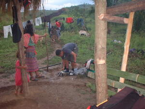

lu-lù 
/luʔluʔ/
v_rt.
“wash”
vi.
for someone (egpanlu-lù, agent, eg><ø-paN-) to wash yourself, especially the hands
Egpanlu-lu e pad te paa ku su amana ne basaken.
Eng. wash; bathe
OCM: Personal Hygiene (515)
Online dict status: -
Usage level: F
vt.
(eglu-luan, eg><an-) to wash (something)
Cult. This verb is not used by Matigsalugs familiar with the Cebuano language because the Cebuano word has an unfortunate meaning
Eglu-luan se ulu.
He is washing his head.
Eng. wash
Tag. maggúgò
Ceb. liguon ang ulo
OCM: Personal Hygiene (515)
Online dict status: -
Usage level: M
1.
vt.
(eglu-luan, eg><an-) to wash
Eglu-luan ku ka kasilè su egsubbeen ku e.
I will wash the sweet potato because I'm going to cook it now.
Eng. wash
Tag. maghúgas
Ceb. maghúgas
Ilo.: agbuggú
OCM: Food Preparation (252), Garment Care (296), Personal Hygiene (515)
Online dict status: -
Usage level: M
vt.
(eglu-luen, eg><en-) to wash the hands or feet
Eng. wash hands or feet
Tag. maghináw
OCM: Personal Hygiene (515), Ritual (788)
Online dict status: -
Usage level: M
vt.
(iglu-lui, ig><i-) to wash (plates or something else)
Iyan din iglu-lui te kasilè su basaken amana
The reason that she washed the sweet potatoes was because they were very muddy.
Eng. wash
Online dict status: -
Usage level: M
Updated by: RJH,AAA,NJK,RJH
Last updated: 21/Dec/2011
"miglu-luan" in text "A day's activities"
"miglu-lu" in text "A day's activities"
"pegpanlu-lu" in healthbook "Mania te keilangan neg lu-luan ta ka me belad ta?"
"egpanlu-lu" in healthbook "Mania te keilangan neg lu-luan ta ka me belad ta?"
"panlu-lu" in healthbook "Mania te keilangan neg lu-luan ta ka me belad ta?"
"panlu-lu" in healthbook "Mania te keilangan neg lu-luan ta ka me belad ta?"
"egpanlu-lu" in healthbook "Mania te keilangan neg lu-luan ta ka me belad ta?"
This page last updated: 19/May/2012
Copyright © 2009-2010, Matigsalug Language Christian Association, Inc